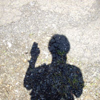
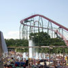
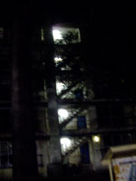
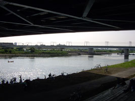

strange music page
* * * 2003.7
|

|
#鹿島田付近(8.10)
「チーッス」みたいな感じ
（コレ撮ってる時ちょっと恥ずかしかった）
|
|
2003.7 / 2003.9
|
-2003.8.27 ついでに品川庄司の事を
#ピンの芸人だと思ってました。
♪neu!/4
-2003.8.24 「セルジオ越後」はJ2のチームでは無いらしい
♪jethro tull/too old to rock'n'roll : too young to die
-2003.8.23 KRAFTWERK/TOUR DE FRANCE SOUNDTRACK
#UK盤(非CCCD盤)ゲット！→国内盤CCCD回避！→＿|￣|○
♪KRAFTWERK/LA FORME
-2003.8.20 D!N!S!
#えーと自宅サーバチマチマいじってんだけどさ、フリーのDNSがしょっちゅー落ちてるみたいです。
使えないので、ZiVEって所でもサブドメイン取ってみました。http://limbo.zive.netって事で。（またKILLING TIMEの曲名から）
近所にfreak out（もちろんザッパから）って飯屋が有って、ちょくちょく昼飯を食いに行くんですけど、そこでイベントとかやったら面白いかなーとかなんとか考えたりとかしてて。（店のオッサンも「イイんじゃね？」って言ってたし）
でも考えてみたら何一つ機材持ってないのだが。誰か協賛しませんか？
♪zappa & beefheart
-2003.8.19
#町田の渋さも行けなかったし、花火も見れなかったし、とくにCDも買ってないし、あんまり書くこと無いんだ。
てなわけで、最近気になるトピック
Robert Wyattの未発表音源が出るみたい→CUNEIFORMから。試聴したら欲しくなった。
こないだの学芸大学CHAOSでのKIDDING TIME(Ma*To+小滝満+RA)は行けなかったんだけど、www.cosmosmile.comでライヴの様子がそのうち配信されるみたい。要チェキ。9/3のKIDDING TIME@AGEHA(Ma*To+Whacho+青山純+小滝満)には行きます。
えむさまのサイトで知ったんだけど、10/3の仙波清彦@新宿PIT-INNは坂田明+清水一登+バカボン鈴木+浦山秀彦だとか。面白そう。
る*しろう、レコーディングしたとか。リリースが楽しみ。
KRAFTWERKの非CCCD盤はまだ見つかりません。
坂本真綾とかRAMとかソウルフラワーユニオンの新譜は金欠のためにまだ買ってません。
♪chick corea & herbie hancock
-2003.8.14 傘が無い
#NHK-FMライブビートの公開収録に行ってきました（レポ）。目当ては大友良英blue band（っていうかまた絶妙のチョイスを・・・ありがとうNHK）
とりあえずもう一人入れたのでウツボさんと一緒に。終演後はかたるさんも含めて和民でちょっとだけ飲み（ロクな事しゃべってないような気が）
NHK出たら傘が無くなっていて、渋谷駅まで入れてもらいました。そして元住吉に付いたらやっぱり大雨。どーしようかと思ってたらラッキーな事に地元の知り合いがちょうど居て（彼にとってラッキーだったかは知らないけど）やはり相合傘（男同士だが）。
書き忘れてたけど、「Overground」っていう雑誌があって、勝井祐二特集でした。音楽雑誌買わない自分でも400円でこの内容なら買うがな。
♪大友良英/blue
-2003.8.10 プログレ、プールに行く。 ('PROGRE' goes to pool)
#くそ暑いのは、プールに行ったところでやっぱり暑い事を知る。
すげー混んでたよ。
|
 |
♪MariMari/Night Birdy
-2003.8.9 嵐を呼ぶプログレ
#台風の中、恵比寿ガーデンホールにSOFT WORKSの来日公演に行ってきました。
チケットには「SOFT WORKS」の上に「ソフトマシーン」って書いて有りました。チラシにも「ソフトマシーン」の文字が沢山。んでもこのバンドは明らかにソフトマシーンじゃ無い訳なんですが。
ま、「Facelift」「As If」「Kings and Queens」「Seven For Lee(SOFT HEADの曲)」なんて聴けただけでも良かったかな。ラトリッジが復帰してくれたら～との思いは有るんだけど。
ちなみに終演後、プログレな人々とパスタを食べながらプログレ話（一部ノイズ話など）してました。帰り際渋谷のHMVに寄ったら旧譜が\1000くらいで売ってて、CDで持ってなかったKing Crimson/EarthboundとGONG/Angel's Eggなんか買っちゃいました。プログレの病は重いようです。
♪soft machine/backwords
-2003.8.8 ROUND HOUSE
#このサイト見てるよーなプログレ筋な人でも知らない人の方が多いよな気もするんですけど、ROUND HOUSEっていうバンドが有りまして。私はかなり好きなんですけど。
そのバンドの加藤さんに会って頂いたりとかして、何かとても面白かったです。色んな事に興味を持てるよーな感じがとっても。（ていうかこんな事書いて良かったかな？）
ちなみにROUND HOUSEは10/19に南青山マンダラにて久々に東京でのライヴが有ります。最近のミョーなジャズロック系好きな人とか見ても十分面白いんじゃないかと思います。気になる方はチェックしてみましょう。
♪ROUND HOUSE/ソフティー・ミスト
-2003.8.7 えーと
#下北沢ERAで友達のライヴを見てきました。hurthole no eternaly extend and detintion apple-nanaっていう長い名前の。リバーブとノイズとギターと絶叫の一人ユニット、テンション下げることを知らないような感じの。
ちなみにKRAFTWERK捜索の続きでは下北沢ディスクユニオン→売切れ。下北沢ONSA→入ってない。という事で二戦ニ敗。
そして前夜に引き続き、山下邸にお伺いしてフジロック反省会（そんな名前じゃなかったかも）何故かファミコンの話をして帰る・・・。
♪sly & the family stone
-2003.8.6 KRAFTWERK捜索隊
#で、出てる訳ですよ。クラフトワークの新譜が。
シングルは思わずCCCDで買っちゃったんで、今度は普通のCDを探すぞと、タワレコとHMVを見てまわったんですけどCCCDだけ。
そしてどうやら全く同じ事をしていた人が同じ日、同じ場所に居ました。FLIP SIDE of the moonの山下さん（8月6日の日記参照）
まぁーそんな訳で、UK盤(非CCCD盤)を発見できなかったんで、とりあえず和民へ。その間、個人的に物凄く衝撃的な既知との遭遇が有ったんですけど、それは割愛。
山下さんは山のようにCDを買いあさってました、プアな自分はとりあえず畠山美由紀の新譜とレコファンで見っけたThrenody Ensembleっていう音響チェンバーを買って帰りました。
ソウルフラワーとか坂本真綾とかRAMとかの新譜が欲しいけど買えない今日この頃。
♪畠山美由紀/真夏の湿原
-2003.8.3 よーやく更新
 |
|
 |
#8月入ったら急に夏みたいになってきたので。とりあえず2日だけ夏休みモードみたいな感じで、
江戸川花火大会とか行って、その後sasakidelicさんのイベントとか行ってオール（この単語久々に使った）、明け方に渋谷でラーメン食って（意外にも美味しかった）、あと多摩川で昼寝したりとか。
タイトルに「よーやく更新」とか書いておいてアレですけど、全然更新進んで無くて、フジロックの話もその前のライヴのこともまだ何も書いてない・・・もう夏休みの宿題をためすぎちゃった小学生の気分。
ちなみに買ったCDを報告するページは自宅サーバの方に移行しようかと。
♪lion4cdr